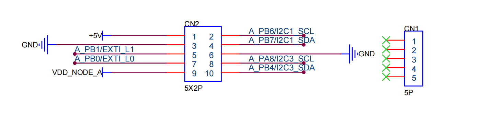
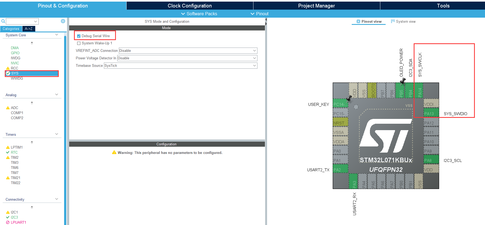
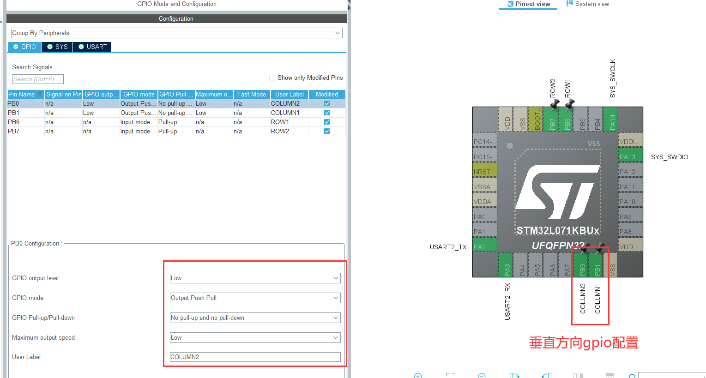
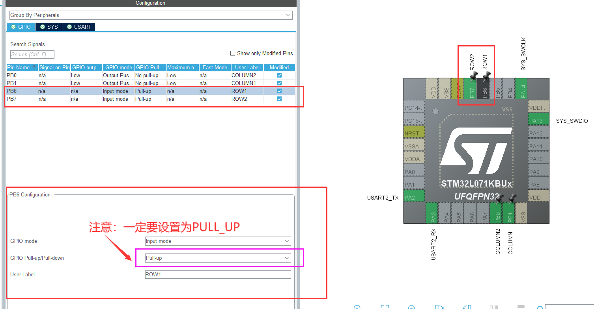
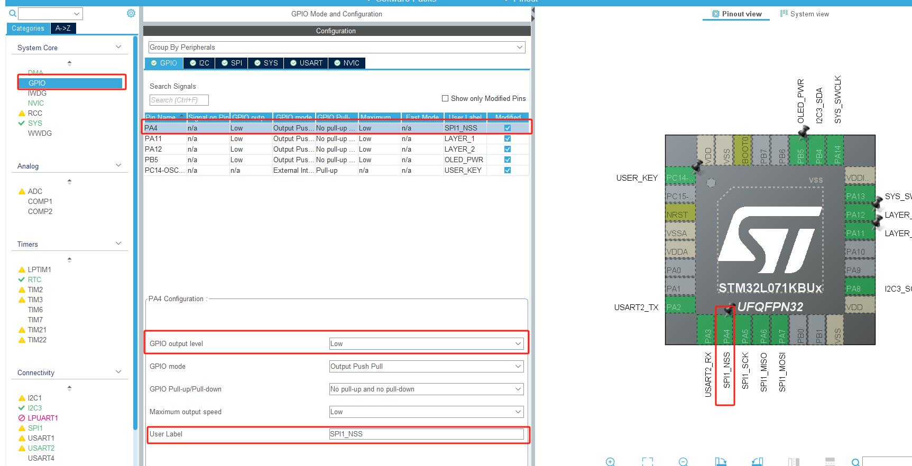

CH12-KEYBOARD
CH12-KEYBOARD
keyboard
| 引脚序号 | 主板引脚 | 扩展版模块引脚 |
|---|---|---|
| 1 | 5v | |
| 2 | ==PB6== | ROW_1 |
| 3 | GND | GND |
| 4 | ==PB7== | ROW_2 |
| 5 | ==PB1== | COLUMN_1 |
| 6 | GND | GND |
| 7 | ==PB0== | COLUMN_2 |
| 8 | ==PA8== | COLUMN_3 |
| 9 | VDD_NODE | 3V3 |
| 10 | PB4 |
==注意：OLED的IC3需要使用8、10两个序号的引脚，所以需要读取第三列的按键时需要关闭IC3==
温度转换公式（STM32LO_参考手册(LOx1).pdf）
$$
\begin{aligned}
& R H=100 \times \frac{S_{R H}}{2^{16}-1} \
& T\left[^{\circ} \mathrm{C}\right]=-45+175 \times \frac{S_1}{2^{16}-1}\
& T\left[^{\circ} \mathrm{F}\right]=-49+315 \times \frac{S_1}{2^{16}-1}
\end{aligned}
$$
CubeMX配置
MDK配置
CubeMX配置


由于SPI配置后只有三个引脚被配置，但数据通信时还有一个Lora通信SPI1_NSS对映的PA4需要配置为低电平
MDK代码编写
key_board6
1 | unsigned char Zsdz_KRY_16(void) |
function.c
1 |
|
function.h
1 |
|
main.c
1 |
|
本博客所有文章除特别声明外，均采用 CC BY-NC-SA 4.0 许可协议。转载请注明来源 Kevin's blogs！
相关推荐

2023-09-11
CH1-led relay
CH1 led relay实验原理LD5可以看到原理图中的单片机的PC15引脚接的LD5，当输出低电平的时候LD5亮，当输出高电平的时候LD5灭 LED5电路 ULN2803ULN2803为一个8路反向电器件，内部为达林顿晶体管阵列，当输入口输入高电平的时候，输出为低电平、当输入口输入低电平的时候，输出为高电平。 ULN2803原理图 典型应用图 运行原理 内部原理图 1.当输入端B输入一个低电平的时候1号与2号三极管的Vbe<0.7v，因此两个三极管都不导通，输出端的电路为开路，负载不工作 输入为低电平时电路图 2.当输入端B输入一个高电平的时候1号与2号三极管的Vbe>0.7v，因此两个三极管都导通，输出端电路电流从VDD出发通过负载器件再通过2号三极管导通到公共端（E），此时负载工作 输入为高电平时电路图 继电器layer1、layer2可以看到原理图中单片机的PA11连接到ULN2803的输入1口，PA12连接到ULN2803的输入2口，因此当PA11输出一个高电平的时候，ULN2803的OUT1输出低电平，A_RELAY1口为低电平...
2023-09-30
CH10-ADC
CH10-ADC 主板原理图 扩展模块原理图 引脚表 引脚序号 主板引脚 扩展版模块引脚 1 5v 2 PB6 LD1 3 GND GND 4 PB7 LD2 5 ==PB1==（ADC_IN9） AIN1 6 GND GND 7 ==PB0==（ADC_IN8） AIN2 8 PA8 9 VDD_NODE 3V3 10 PB4 STM32L0_参考手册(L0x1).pdf ADC 旨在提供与模拟电源和转换通道上施加的电压之间的比率相对应的数字值。对于大多数应用用例，有必要将该比率转换为独立于 VDDA 的电压。对于 VDDA 已知且 ADC 转换值右对齐的应用，您可以使用以下公式来获取该绝对值：$$\begin{aligned}& {V_{CHANNELx}}= ADCD_ATAx\times \frac{V_{DDA}}{FULL_SCALE} \\end{aligned}$$ ADC_DATAx 是 ADC 在通...
2023-10-05
CH11-NE555
CH11-NE555 主板原理图 扩展模块原理图 引脚表 引脚序号 主板引脚 扩展版模块引脚 1 5v 2 PB6 LD2 3 GND GND 4 PB7 LD1 5 ==PB1==（ADC_IN9） ADC(PR1) 6 GND GND 7 ==PB0==（TIM3 CHANNEL3） PLUS(PR2) 8 PA8 9 VDD_NODE 3V3 10 PB4 CubeMX配置MDK配置 下载线配置 ADC配置 NE555配置 NE555配置NVIC 回调函数 Timer配置 Timer的NVIC配置 SPI配置1 由于SPI配置后只有三个引脚被配置，但数据通信时还有一个Lora通信SPI1_NSS对映的PA4需要配置为低电平 SPI配置2 OLED引脚配置 GPIO引脚配置 RTC配置 USART_DMA配置 USART参数配置 USART中断配...
2023-09-13
CH2-EXIT
CH2-EXITEXIT理论EXTIEXTI（Extern Interrupt）外部中断EXTI可以监测指定GPIO口的电平信号，当其指定的GPIO口产生电平变化时，EXTI将立即向NVIC发出中断申请，经过NVIC裁决后即可中断CPU主程序，使CPU执行EXTI对应的中断程序支持的触发方式：上升沿/下降沿/双边沿/软件触发支持的GPIO口：所有GPIO口，但相同的Pin不能同时触发中断通道数：16个GPIO_Pin，外加PVD输出、RTC闹钟、USB唤醒、以太网唤醒触发响应方式：中断响应/事件响应 中断：要进入NVIC，有相应的中断服务函数，需要CPU处理 事件：不进入NVIC，仅用于内部硬件自动控制的，如：TIM、DMA、ADC EXTI基本结构 AFIO简介 中断触发流程 中断触发流程 CubeMX配置时钟配置 时钟配置 下载配置 下载线配置 中断配置1.IO口先选择EXTI 先选择一个IO口进行配置EXTI 2.GPIO配置触发方式 GPIO触发方式配置 3.NVIC寄存器使能 NVIC使能 代码编...
2023-09-14
CH3-usart
CH3-usartUSART概念硬件连接原理CH443KCH443K是SPDT低阻宽带双向模拟开关芯片。CH443K包含1通道SPDT单刀双掷模拟开关，高带宽，低导通电阻，可以用于视频或者USB信号二选一切换。 芯片原理图 芯片引脚说明 内部逻辑电路 CH443K内部的单通道单刀双掷模拟开关SPDT，由SEL 引脚选择进行切换。下表是其控制真值表。 芯片控制真值表 开发板原理图分析由开发板可以看到下载区的电路通过两个CH443K芯片连接A/B两区，当选的A区进行通信时，引脚连接到A区的PA2和PA3，于是我们需要配置该USART通信口 开发板原理图 CubeMX配置 下载线配置 时钟树配置 USART配置 DMA配置 DMA与USART的NVIC配置 NVIC配置 KEIL代码编写注：1.如果需要定义一个变量能在多个文件中使用，我们需要在源文件.中进行定义（可以赋值），在需要调用的文件中使用extern进行声明（禁止赋值） 2.==只有直接通过数组名作为sizeof参数时，输出才是数组长度...
2023-09-18
CH5-IDLE
CH5-IDLEIDLE原理在使用串口接受字符串时，可以使用空闲中断（IDLEIE置1，即可使能空闲中断），这样在接收完一个字符串，进入空闲状态时（IDLE置1）便会激发一个空闲中断。在中断处理函数，我们可以解析这个字符串。 接受完一帧数据，触发中断 STM32的IDLE的中断产生条件：在串口无数据接收的情况下，不会产生，当清除IDLE标志位后，必须有接收到第一个数据后，才开始触发，一但接收的数据断流，没有接收到数据，即产生IDLE中断 CubeMX配置 下载线配置 RTC配置 USART配置 USART DMA配置 USER按键中断配置 NVIC配置 时钟树配置 MDK程序编写function.cfputc函数12345678int fputc(int ch,FILE *f){ extern UART_HandleTypeDef huart2; HAL_UART_Transmit(&huart2,(const uint8_t *)&ch,1,0xffff); while(__HAL_UART_G...